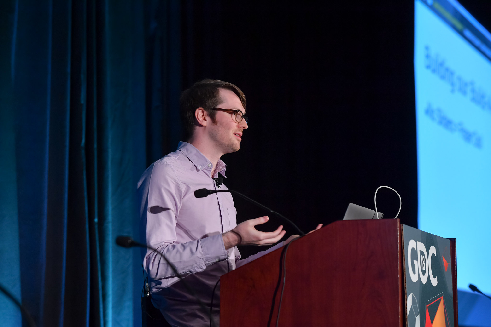
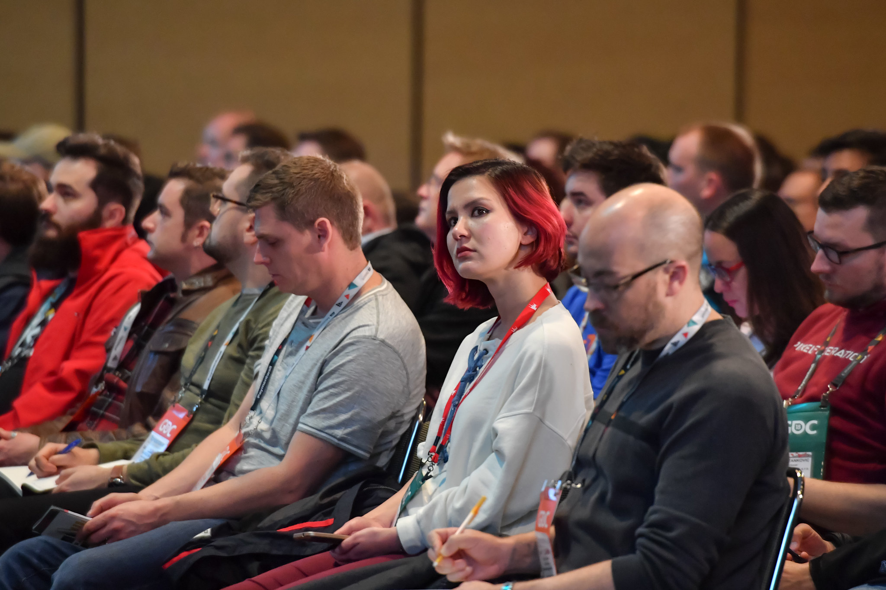

Detail informations about GDC Conference.
The CGDC changed its name to "Game Developers Conference" in 1999. The GDC has also hosted the Spotlight
Awards from 1997 to 1999, the Independent Games Festival since 1999 and the Game Developers Choice
Awards since 2001. The GDC is also used for the annual meeting of the International Game Developers
Association (IGDA).
The Independent Games Festival (IGF) is the first and largest competition for independent games, and
highlights the innovative achievements of developers ranging in size from individuals building PC titles
to studio teams creating console downloadable titles. A pool of judges from the game industry selects
the finalists and winners, and the individual creators are named as the recipients of the awards. The
IGF is managed and developed by UBM TechWeb, the organizer of the GDC.

2005 Game Developers Conference entrance
The Game Developers Choice Awards is the game industry's only open, peer-based awards show. Any member
of the IGDA may nominate games, and then the membership votes on the finalists. As with the IGF, the
individual creators are named as the recipients of the awards. Specialty awards such as Lifetime
Achievement and First Penguin are determined by the GDCA committee, and all are revealed at the Game
Developers Choice Awards ceremony at the GDC. The IGF and the GDCA are presented back to back, in an
awards show produced by UBM TechWeb, typically on the Wednesday of the GDC.

UBM TechWeb has added several other events to the GDC in recent years. At the GDC Expo, developers
display the latest techniques useful in game development. "GDC Mobile," first held in 2002, focuses on
developing games for mobile phones. Starting in 2004, the GDC partnered with Game Connection to present
Game Connection @ GDC, a live matchmaking service for developers and publishers, which in 2007 expanded
to include Game Connection Services for outsourcing and other services. Starting in 2006, the GDC
partnered with Video Games Live to feature their symphonic performance of videogame music as the closing
night event. In addition, the GDC has hosted a number of conference-wide game experiments designed by
GameLab. The 2017 GDC included a Board Game Design Day, featuring talks from developers and publishers
of tabletop games on their design processes.[5]
UBM TechWeb has also produced several spinoff events. For example, the first GDC Europe (GDCE) was
featured at the European Computer Trade Show (ECTS) in London between August 31 and September 1, 2001.
Other GDC-related events include the Serious Games Summit, first held in 2004 as a GDC tutorial, and
spun off as a standalone event in 2005, focusing on developing games for practical purposes, such as
education, corporate training, military, and health care applications; and the Hollywood and Games
Summit in conjunction with The Hollywood Reporter first held in June 2006. Additional events include the
Game Advertising Summit, the Game Outsourcing Summit, the Game Career Seminar, GDC Russia, the China
Game Summit, GDC London, the London Games Summit, the London Game Career Fair, and many others. In late
2006, UBM TechWeb acquired The Game Initiative, and now produces the Austin Game Developers Conference.